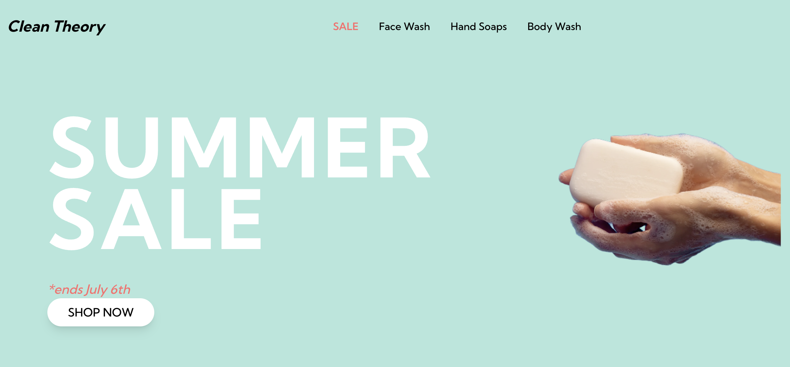
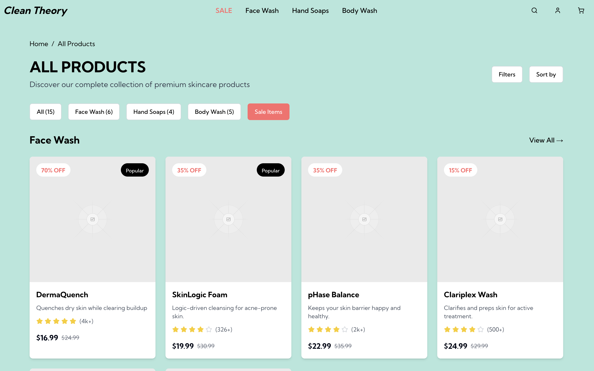
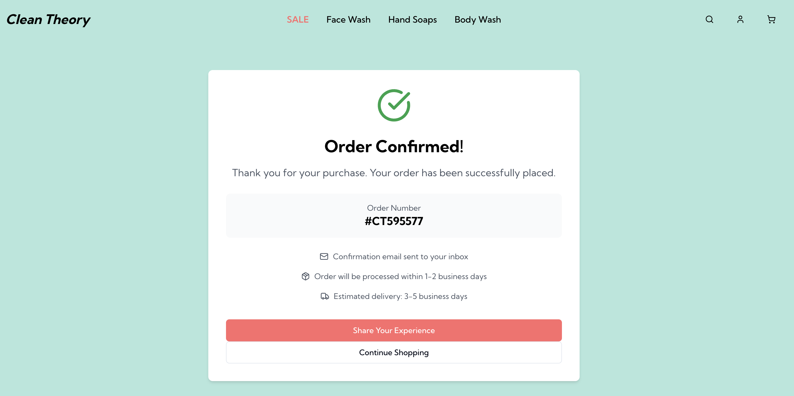

Clean Theory focuses on selling skincare products like face wash, body wash, and hand soaps. The site emphasizes a clean and modern layout, simple navigation, product filters, and visual cues like reviews and tags to guide the shopping experience.
  This responsive service site was created for a fictional youth soccer club, Nebula FC, as part of a UI/UX design course. The goal was to design a clean, modern interface that showcases essential information for both parents and young players. The homepage includes an engaging hero section with an energetic call-to-action, followed by structured sections outlining club programs, registration details, and testimonials. A consistent color palette inspired by deep space and galaxy motifs reflects the club's name, while friendly sans-serif typography enhances readability for all ages. The design emphasizes usability across devices — layouts adapt smoothly to tablet and mobile screens. Navigation is intuitive, and buttons are clearly labeled to reduce friction. Accessibility was considered by using strong contrast and semantic HTML. Behind the design, special attention was given to hierarchy, spacing, and alignment to maintain visual balance throughout the site. Each section was wireframed, prototyped, and tested iteratively during the development process.
Visit the live site